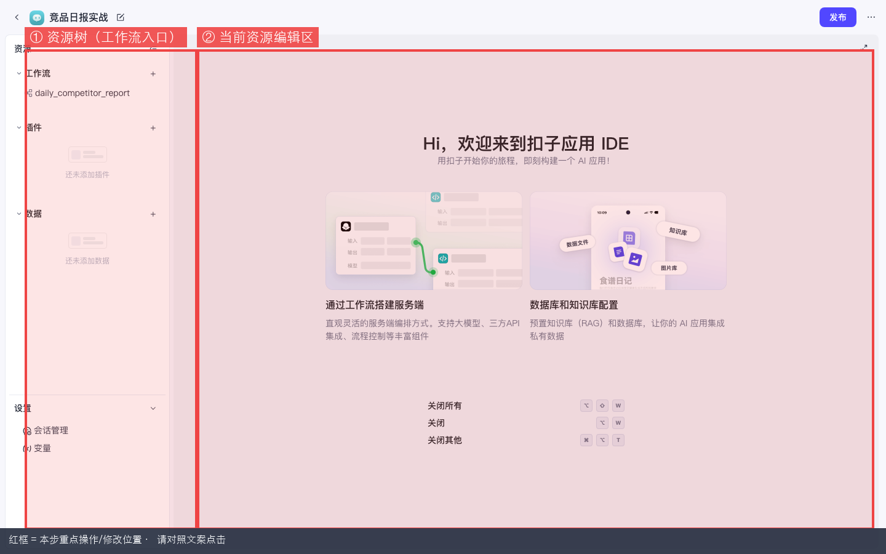
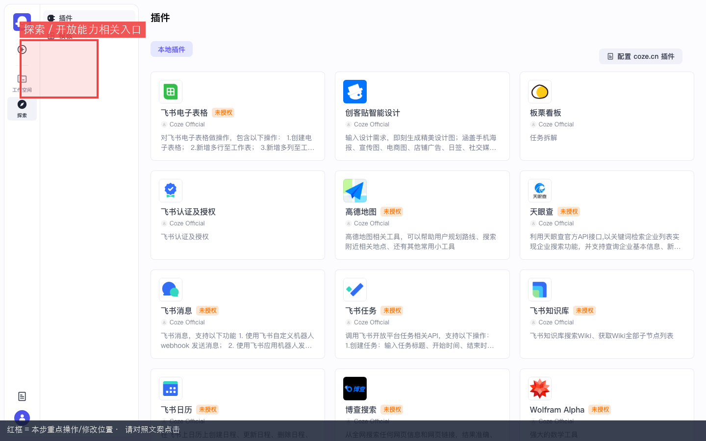
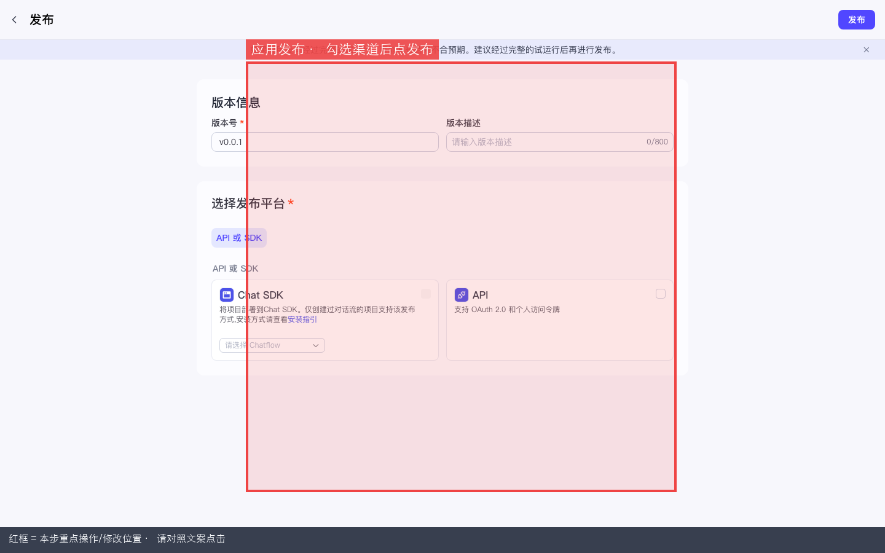
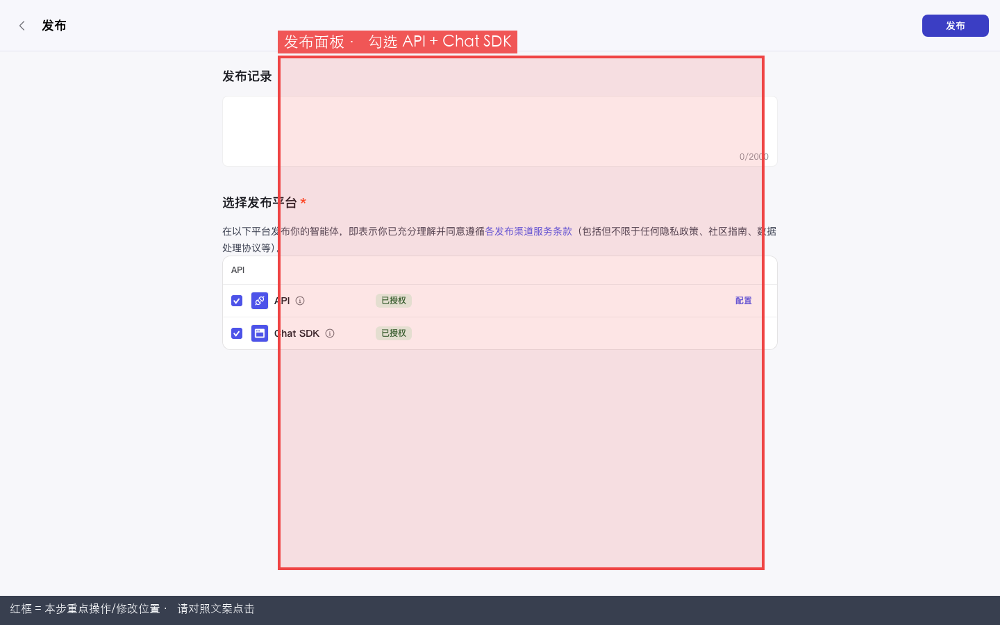
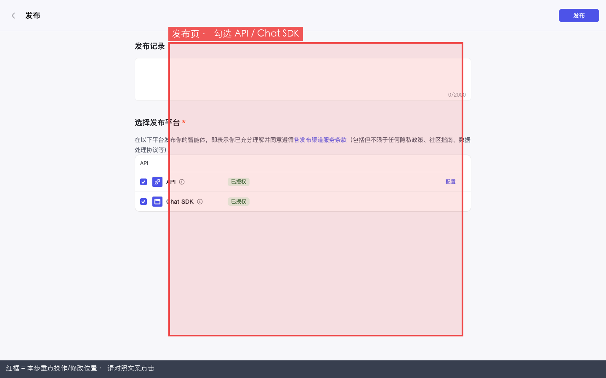

Coze 实战 · 第10课 / 共 10 课 · ≈35 min · 开源可用
P09 · Chatflow 与 Chat SDK 嵌入
上级：实战总目录 · 本地：http://localhost:8888。
实战主线最后一课：对话流（多轮聊天形态的工作流）+ 发布 Chat SDK + 嵌入自有网站思路。批处理日报仍用 P01 普通工作流 + P08 cron。
🎯 第10课目标分清 Workflow（批处理）与 Chatflow（多轮对话），创建并调试一条对话流，发布 Chat SDK，理解嵌入自有站点时鉴权与 user_id 注意点。
★
为什么 Chatflow 放最后一课？
学习路径说明
Chatflow / Chat SDK 是「给人多轮对话」用的；OpenAPI 调工作流是「给系统批处理」用的。你已在 P08 学会发布、PAT、curl — 本课在此基础上把对话窗嵌出去，整条开源实战链路就闭环了。
| 形态 | 典型场景 | 对应课 |
|---|---|---|
| 普通 Workflow | 一次输入跑完、日报推送、cron | P01 + P08 |
| Chatflow | 客服问答、引导填表、多轮澄清 | 本课 P09 |
| 智能体 Agent | 自由对话 + 挂技能 | P02 + P03 |
0
前置检查
1
先分清：Workflow vs Chatflow
本步目的：完成「先分清：Workflow vs Chatflow」。请先看懂下方红框标注的截图，再按编号逐步操作；做完用验收行自检。
| 对比项 | 普通工作流 Workflow | 对话流 Chatflow |
|---|---|---|
| 用户怎么进 | API / 试运行 / crontab | 对话 UI、Chat SDK 网页窗 |
| 交互方式 | 一次提交参数 → 跑完 | 多轮：用户一句、系统一句 |
| 开始节点 | 接收固定 input 变量 | 接收「用户消息」 |
| 教程例子 | P01 竞品日报推飞书 | 本课「竞品情报客服」 |
本步目的 / 作用：怎么选：每天定时发群 → Workflow + cron；网站右下角客服气泡 → Chatflow + Chat SDK。
2
在应用里创建对话流
本步目的 / 作用：Chatflow 通常创建在「应用」资源树下，与普通工作流并列。
- 打开
http://localhost:8888→ 项目开发 - 打开已有应用（如「竞品日报实战」）或新建一个应用
- 进入应用 IDE（地址含 project-ide）
- 看左侧资源栏 → 找到「工作流 / 对话流」区域
- 点 + 或「新建」
- 若弹出类型选择：选 对话流 / Chatflow（不要选普通工作流）
- 名称填：
support_chatflow（英文下划线） - 描述可填中文：
竞品情报多轮客服，教程用 - 点 确认 → 进入对话流画布

图 1：应用 IDE — 左侧资源树可新建对话流 / 工作流。
红框标注 = 本步要点击 / 填写 / 观察的位置

图 2：探索 / 开放能力相关入口（SDK 文档有时从这里链出）。
红框标注 = 本步要点击 / 填写 / 观察的位置
✅ 画布打开；节点类型与普通工作流类似，但开始节点面向「用户消息」。
3
编排最小可跑对话（三节点）
本步目的：完成「编排最小可跑对话（三节点）」。请先看懂下方红框标注的截图，再按编号逐步操作；做完用验收行自检。
最小链路
开始（用户消息） → 大模型 LLM → 结束（回复用户）
3.1 添加 LLM 节点
- 在「开始」和「结束」之间点 +
- 选 大模型 / LLM
- 模型下拉：选 P00 已启用的模型（如
claude-v1） - 连线：开始 → LLM → 结束
3.2 配置提示词（复制粘贴）
LLM 节点「系统提示词」或「用户提示词」区粘贴：
你是竞品情报助理，服务对象是 BitMart 增长/运营同事。
规则：
1. 用不超过 5 句中文回答。
2. 只讨论加密货币交易所（Binance、Bybit、Bitget、Gate.io 等）的活动与增长策略。
3. 若问题与职责无关，礼貌说明你能帮什么。
4. 不确定的事实标注「待核实」，不要编造数据。
用户消息：{{user_message}}
若界面用变量引用而非 {{user_message}}，从开始节点拖「用户输入」到 LLM 输入框即可（不同版本 UI 略有差异）。
3.3 结束节点
- 打开「结束」节点配置
- 输出映射：把 LLM 的回复文本作为返回给用户的 content
- 点右上角 保存
4
对话流调试面板：多轮测试
本步目的：完成「对话流调试面板：多轮测试」。请先看懂下方红框标注的截图，再按编号逐步操作；做完用验收行自检。
- 画布右上角点 试运行 或打开右侧「对话调试」侧栏
- 在输入框粘贴第 1 句 → 点发送：
Binance 最近有什么 Launchpool 活动？
- 等回复出现
- 再发第 2 句（测多轮）：
和 Bybit 相比有什么差异？
✅ 每一轮都有回复；不是报错或空白。Tokens 大于 0 说明模型正常。
Tokens=0回 P00 检查模型是否启用、API Key 是否配置。
5
发布到 Chat SDK + API 渠道
本步目的 / 作用：与 P08 相同 — 未发布则 SDK / API 调不到线上版本。开源版仍只有 API 与 Chat SDK，无社交渠道。
5.1 发布应用（推荐，含对话流）
- 在应用 IDE 右上角点 发布
- 发布记录填：
chatflow-v1 - 勾选 API + Chat SDK
- 确认发布

图 3：应用发布页 — API / Chat SDK 勾选。
红框标注 = 本步要点击 / 填写 / 观察的位置

图 4：发布面板 — 渠道与版本记录。
红框标注 = 本步要点击 / 填写 / 观察的位置
5.2 或发布智能体（若 Chat SDK 绑 Bot）
- 打开 P02 智能体 IDE → 右上角 发布
- 同样勾选 API + Chat SDK → 发布
- 记录
bot_id（可在 Bot URL /bot/数字 或发布成功页看到）

图 5：智能体发布 — Chat SDK 渠道。
红框标注 = 本步要点击 / 填写 / 观察的位置
嵌入时要准备的三个值
①
② PAT（P08 在 设置 → API 授权 创建）
③ 终端用户
bot_id 或应用 id（从 URL / 发布页抄）② PAT（P08 在 设置 → API 授权 创建）
③ 终端用户
user_id（开源 SDK 常要求，可先用固定测试 id）
6
嵌入自有 HTML 页面（骨架 · 勿公开 PAT）
本步目的 / 作用：说明：具体 npm 包名、初始化参数随开源 open-platform 版本会变。下面是思路骨架；请对照你本地安装包的 README 改字段名。
- 新建本地 HTML 文件，如
chat-demo.html - 页面里留一个空 div 作为挂载点
- 按官方 Chat SDK 文档引入 JS 模块
- 初始化时传入 bot 标识、base URL（
http://localhost:8888）、鉴权 - 浏览器打开该 HTML 测气泡/对话窗
<!DOCTYPE html>
<html lang="zh-CN">
<head>
<meta charset="UTF-8">
<title>Coze Chat SDK 本地演示</title>
</head>
<body>
<h1>我的站点 — 右下角应有 Coze 对话窗</h1>
<div id="coze-chat-root"></div>
<script type="module">
// ⚠️ 下列为骨架，请按你安装的 @coze/* Chat SDK 文档替换
//
// import { CozeWebSDK } from '...';
//
// const client = new CozeWebSDK.WebChatClient({
// config: {
// bot_id: '你的bot_id',
// baseURL: 'http://localhost:8888',
// },
// auth: {
// type: 'token',
// token: '仅本地调试用的PAT', // 生产：后端换短期 token！
// },
// userInfo: {
// id: 'demo-user-001',
// url: '',
// nickname: '访客',
// },
// });
// client.mount('#coze-chat-root');
</script>
</body>
</html>
踩坑：前端裸奔长期 PAT
任何打开网页的人都能在开发者工具里看到你的 token。生产环境必须由你的后端用 PAT 换短期票据，前端只拿短 token。
也可用 P08 的 OpenAPI 直接 POST 对话接口（若版本暴露
/v3/chat 等），适合自有 UI 完全自绘；Chat SDK 适合快速嵌入标准对话窗。7
验收清单 · 完结
本步目的 / 作用：用清单自检本课是否真正做完；全部勾上再进入下一课。
- □ 能口头说清 Workflow（批处理）与 Chatflow（多轮对话）分工
- □ 在应用内创建并保存
support_chatflow - □ 调试面板至少完成 2 轮问答
- □ 发布时勾选 API + Chat SDK（知悉无社交渠道）
- □ 知道嵌入需要 bot_id + 鉴权，PAT 不能写进公开前端
🎉 恭喜完成 Coze Studio 开源实战全部 10 课！返回 实战总目录 复习或挑薄弱课重练。
| 你现在的能力栈 | 对应课 |
|---|---|
| 本地部署 + 模型 | P00 |
| 智能体对话 + 挂技能 | P02 · P03 |
| 知识库 / 插件 / 数据库 | P04 · P05 · P06 |
| 应用 + 工作流日报 | P07 · P01 |
| 发布 + PAT + cron | P08 |
| Chatflow + SDK 嵌入 | P09 |